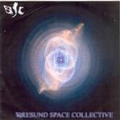

| Artist: | Oresund Space Collective |
| Title: | Oresund Space Collective |
| Label: | Transubstands trans017 |
| Length(s): | 67 minutes |
| Year(s) of release: | 2005 |
| Month of review: | [10/2007] |
| 1) | Faked It All The Way | 6.21 |
| 2) | Consumed By The Goblin | 14.51 |
| 3) | OSC Bolero | 5.22 |
| 4) | Falling Stardrops | 15.460 |
| 5) | Grab A Cab | 7.15 |
| 6) | Moonhead | 2.29 |
| 7) | Sundown | 17.39 |
Faked It All The Way is a typical space rock tune, with plenty of focus on repetitive, high pitched patterns and sequences. Plenty of sizzles and effects. Kind of an electronic introduction to what comes next.
Consumed By The Goblin is a much longer, and a bit more relaxed sounding tune, almost laid back. The keys are aswirl, the organ and guitar have a strongly laid back feel. A bit as if someone took Fender Rhodes style jazz(rock) and moved it into the space realm. The drumming is rather off-beat and keeps the music varied and groovy. The music has a strong and even flow, combining elements of Canterbury with space rock (but mainly the latter).
OSC Bolero continues the line set by the previous tune: rather long winded and slowly varying, with much repetition and a strong nod to the laid back grooves of the seventies. The drumming is again the most adventurous part and is also quite prominent in the sound spectrum without getting loud though.
With the lengthy Falling Stardrops, we are back in bleepy territory and the space feel is undeniable. But this isn't rock anymore, we are simply floating. Slowly, the music gets underway with spoken voices and drums setting in. The music has a bit of a jam/improv feel, slowly developing. It is easy to hear the Ozrics here, but without the dominant guitar of Ed. There is quite a bit more fire towards the end, but the music sounds more even than the Ozrics, meaning that the fire is distributed evenly. The keyboards have their moment towards the end adding quite a bit of swing.
I guess Hawkwind might have started it, but dub and reggae are not unknown visitors to a space rock album. Elements of it crop up in Grab A Cab. Not a problem, as long as they do not take it too far (or actually too long). The first few minutes are for getting into the mood, nothing much happens, but soon we end faster, less free waters, in which the percussive groove takes us along for a ride. A soft one, with the wail of guitar.
Moonhead is a short one, sort of introduction to the final long jam: Sundown. Again the band takes its time to develop, going from soft and cosmic, via open guitar sounds, rather freeform, until the drums finally set in after the ten minute mark. The music stays light, and becomes rather vibey towards the end.